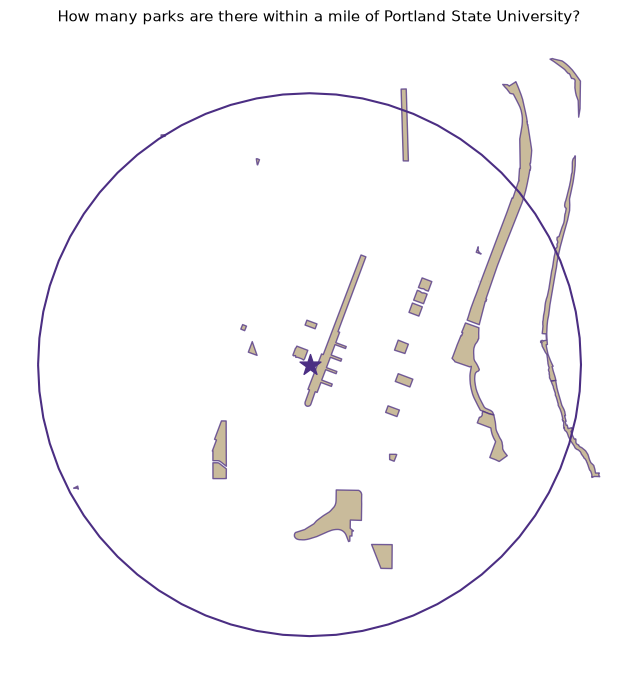
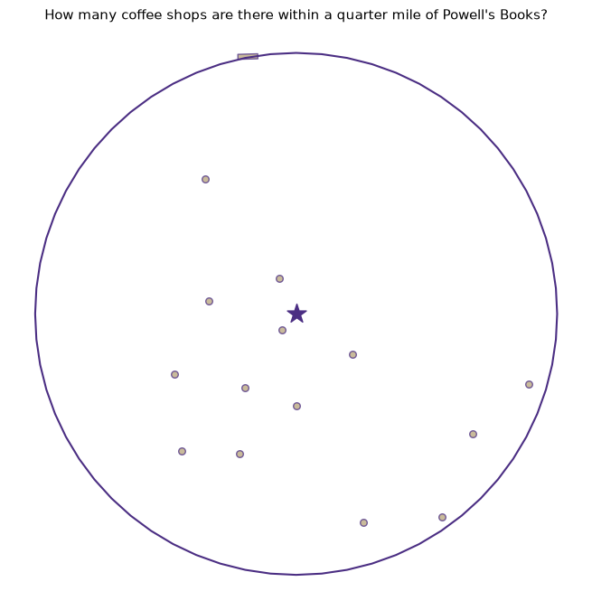

A Geo-Agent Without the AI: Natural-Language Spatial Proximity Queries in Python — No Keys, No LLM
python
geospatial
geoai
openstreetmap
osm
Author
Marc Weber
Published
July 12, 2026
A Geo-Agent Without the AI
Natural-language spatial proximity queries · Portland, Oregon · OpenStreetMap · no keys, no LLM
The theme of a typical “geoAI” agent has the same skeleton: take a plain-English question, figure out what it’s asking, resolve the place names, run a spatial query, compose an answer. The language model only does the first of those steps. Everything else — geocoding, coordinate reference systems, distance semantics, tag vocabularies, the query itself — is unglamorous spatial plumbing. This notebook builds all of that plumbing and swaps the learned component for a regex and a lookup table, so the whole thing runs with zero API keys and zero accounts:
“How many parks are there within a mile of Portland State University?”“How many coffee shops are there within a quarter mile of Powell’s Books?”
The pipeline — the same three stages an LLM-driven geo-agent has, with stage 1 de-glamorized:
Stage
What it does
This notebook uses
1 · Parse
Turn language into structured intent: (what, how far, where)
Regex + a vocabulary table
2 · Ground
Resolve the place name to coordinates
Nominatim geocoder (keyless)
3 · Act
Run the spatial query and compose the answer
OSMnx → Overpass, GeoPandas in EPSG:32610
Section 9 shows exactly where an LLM would slot in — stages 2 and 3 wouldn’t change a line. If you’re evaluating geoAI tools, that’s a useful mental model: the model buys you open-ended language; the geospatial rigor still has to come from somewhere.
⚠️ This notebook requires an internet connection at runtime — it queries live OSM services (politely; see the etiquette note at the end).
1 — Setup
One dependency does all the heavy lifting. OSMnx bundles the Nominatim and Overpass clients and returns GeoDataFrames.
# [Terminal] — run once in your environment, not in this cell# pip install osmnx matplotlib# [Python]import reimport osmnx as oximport geopandas as gpdimport matplotlib.pyplot as pltfrom shapely.geometry import Point# Identify yourself to the free OSM services (Nominatim usage policy)ox.settings.http_user_agent ="GISPR-geoai-demo (educational)"ox.settings.requests_timeout =60print(f"osmnx {ox.__version__}") # written against osmnx 2.x
osmnx 2.1.0
2 — The vocabulary: English terms → OSM tags
This table is the agent’s world model. Each plain-English term maps to the OSM tag query that Overpass understands. Extending the agent = adding a row.
Handles the ways people actually say distances: “a mile”, “quarter mile”, “half a mile”, “three quarters of a mile”, “800 meters”, “1.5 km”, “2 miles”.
# [Python]MI_TO_M =1609.344FRACTIONS = {"a quarter": 0.25, "quarter": 0.25,"a third": 1/3, "third": 1/3,"half a": 0.5, "a half": 0.5, "half": 0.5,"three quarters of a": 0.75, "three-quarters of a": 0.75,}def parse_distance(text):"""Convert a distance phrase to meters.""" t = re.sub(r"\bof a\b", "", text.lower().strip()).strip() m = re.match(r"([\d.]+)\s*(miles?|mi|kilometers?|km|meters?|m)\b", t)if m: # "2 miles", "800 meters", "1.5 km" val, unit =float(m.group(1)), m.group(2)if unit.startswith("mi"): return val * MI_TO_Mif unit.startswith("k"): return val *1000return valfor phrase, frac insorted(FRACTIONS.items(), key=lambda kv: -len(kv[0])):if t.startswith(phrase): # "quarter mile", "half a mile"return frac * MI_TO_Mif re.match(r"(a|an|one)\s+mile", t): # "a mile"return MI_TO_Mif re.match(r"(a|an|one)\s+(kilometer|km)", t):return1000.0raiseValueError(f"Couldn't parse the distance: '{text}'")
4 — Parse stage: the question
One regex covers the target question shape: How many <things> are there within <distance> of <place>?
A rule-based parser is brittle by design — the failure message tells the user exactly what shapes it accepts and what vocabulary it knows. That transparency is a feature in a teaching agent.
# [Python]QUESTION_RE = re.compile(r"how many\s+(?P<what>.+?)\s+(?:are there\s+|are\s+|is there\s+)?"r"within\s+(?P<dist>.+?)\s+(?:mile[s]?\s+)?of\s+(?P<where>.+?)[?.!]?$", re.IGNORECASE,)def parse_question(question):"""Return (tags, radius_m, place, feature_label) or raise with guidance.""" m = QUESTION_RE.match(question.strip())ifnot m:raiseValueError("I only understand questions shaped like:\n"" 'How many <things> are there within <distance> of <place>?'" ) what_raw = m.group("what") dist_text = m.group("dist").strip() where = m.group("where").strip()# The regex may absorb a trailing 'mile(s)' into its own pattern — restore itif re.fullmatch(r"[\d.]+|a|an|one|quarter|half|a quarter|a half|third|a third", dist_text, re.IGNORECASE): dist_text +=" mile" term = normalize_term(what_raw)if term isNone: known =", ".join(sorted(TAG_MAP))raiseValueError(f"I don't know '{what_raw}' yet. I know: {known}.\n"f"Add it to TAG_MAP to teach me.")return TAG_MAP[term], parse_distance(dist_text), where, term
✅ Parser self-test — runs offline, no network needed
Run this any time you edit the parser or vocabulary. Everything below here does hit the network.
# [Python]tests = [ ("How many parks are there within a mile of Portland State University?", {"leisure": "park"}, 1609.3, "Portland State University"), ("How many coffee shops are there within a quarter mile of Powell's Books?", {"amenity": "cafe"}, 402.3, "Powell's Books"), ("how many bars within half a mile of Pioneer Courthouse Square", {"amenity": ["bar", "pub"]}, 804.7, "Pioneer Courthouse Square"), ("How many bus stops are within 800 meters of Union Station, Portland?", {"highway": "bus_stop"}, 800.0, "Union Station, Portland"),]for q, etags, edist, ewhere in tests: tags, dist, where, _ = parse_question(q)assert tags == etags andabs(dist - edist) <0.5and where == ewhere, qprint(f"OK {q}")print("\nParser tests passed.")
OK How many parks are there within a mile of Portland State University?
OK How many coffee shops are there within a quarter mile of Powell's Books?
OK how many bars within half a mile of Pioneer Courthouse Square
OK How many bus stops are within 800 meters of Union Station, Portland?
Parser tests passed.
5 — Ground stage: keyless geocoding
ox.geocode() calls Nominatim, OSM’s free geocoder. A small cache avoids re-asking for the same landmark — both faster and politer to a shared public service.
# [Python]_geocode_cache = {}def geocode(place, city_hint="Portland, Oregon, USA"):"""Place name → (lat, lon). Appends the city hint if the user didn't give one.""" query = place if","in place elsef"{place}, {city_hint}"if query notin _geocode_cache: _geocode_cache[query] = ox.geocode(query) # Nominatim, no keyreturn _geocode_cache[query]# Quick checkgeocode("Portland State University")
(45.5118121, -122.686121)
6 — Act stage: the spatial engine
Two details that separate a correct answer from a hand-wave:
Bounding box ≠ circle.features_from_point(dist=...) fetches a square around the point, so we over-fetch slightly and then apply a true distance filter in a projected CRS — EPSG:32610 (UTM 10N), the GISPR course standard, which covers Portland. Distance is measured to the feature’s nearest edge, so a park whose boundary crosses the ring counts.
OSM double-counting. One real-world park is often mapped as several OSM elements (a relation plus member ways). We report the raw element count and the unique-name count — the honest answer usually lives between them.
# [Python]CRS_ANALYSIS =32610# UTM Zone 10N — GISPR course standard, covers Portlanddef features_within(tags, center_latlon, radius_m):"""GeoDataFrame of OSM features truly within radius_m of the point.""" lat, lon = center_latlon# over-fetch a square 15% wider than the radius, then filter precisely feats = ox.features_from_point((lat, lon), tags=tags, dist=radius_m *1.15) feats = feats.to_crs(epsg=CRS_ANALYSIS) center = gpd.GeoSeries([Point(lon, lat)], crs=4326).to_crs(CRS_ANALYSIS).iloc[0] feats["dist_m"] = feats.geometry.distance(center) # edge distance, not centroidreturn feats[feats["dist_m"] <= radius_m].copy(), center
7 — The agent: ask()
Chains the three stages, composes a sentence, and draws the evidence — the search ring, the landmark, and every matching feature.
# [Python]def ask(question, show_map=True, list_names=False):"""Answer a natural-language proximity question against live OSM data."""# 1 · Parsetry: tags, radius_m, place, term = parse_question(question)exceptValueErroras e:print(f"🤔 {e}")returnNone# 2 · Groundtry: center_latlon = geocode(place)exceptException:print(f"🤔 Nominatim couldn't find '{place}'. Try adding the city or a fuller name.")returnNone# 3 · Acttry: hits, center = features_within(tags, center_latlon, radius_m)exceptException: # Overpass returns an error when zero elements match hits =Noneif hits isNoneorlen(hits) ==0:print(f"📍 I found no {term}s within {radius_m:,.0f} m of {place}.")returnNone n_elements =len(hits) names = hits["name"].dropna().unique() if"name"in hits else [] n_named =len(names) miles = radius_m /1609.344print(f"📍 Within {miles:g} mile{'s'if miles !=1else''} "f"({radius_m:,.0f} m) of {place}:")print(f" {n_elements} OSM {term} element{'s'if n_elements !=1else''}"f" · {n_named} unique named {term}{'s'if n_named !=1else''}")if list_names and n_named:for nm insorted(names):print(f" • {nm}")if show_map: ring = gpd.GeoSeries([center.buffer(radius_m)], crs=CRS_ANALYSIS) ax = ring.boundary.plot(color="#4b2e83", linewidth=1.5, figsize=(7, 7)) hits.plot(ax=ax, color="#b7a57a", edgecolor="#4b2e83", alpha=0.75, markersize=30) gpd.GeoSeries([center], crs=CRS_ANALYSIS).plot( ax=ax, color="#4b2e83", marker="*", markersize=250) ax.set_title(question, fontsize=11) ax.set_axis_off() plt.tight_layout(); plt.show()return hits
8 — Ask it something
The two motivating questions. First call per landmark takes a few seconds (live Nominatim + Overpass round trips).
# [Python]parks = ask("How many parks are there within a mile of Portland State University?")
📍 Within 1 mile (1,609 m) of Portland State University:
26 OSM park elements · 22 unique named parks

# [Python]coffee = ask("How many coffee shops are there within a quarter mile of Powell's Books?", list_names=True)
📍 Within 0.25 miles (402 m) of Powell's Books:
15 OSM coffee shop elements · 15 unique named coffee shops
• Caffè Umbria
• Courier Coffee Roasters
• Guilder Cafe
• Java Man
• Kilo D’Cofi
• Mako Matcha Mill
• Never Coffee
• Nuvrei
• Oak Street Coffee
• Roseline Coffee Bar
• Starbucks
• Stumptown Coffee Roasters
• Sweet Coco G
• The Mezz
• Water Avenue Coffee Company

# [Python] — graceful failure: unknown vocabulary teaches the user the contractask("How many dragons are there within a mile of Portland State University?")
🤔 I don't know 'dragons' yet. I know: bar, bike shop, bookstore, brewery, bus stop, cafe, coffee shop, food cart, grocery store, hospital, library, park, pharmacy, playground, restaurant, school, supermarket.
Add it to TAG_MAP to teach me.
🔧 Try it yourself
How many breweries are there within 2 miles of the Moda Center?
How many food carts are there within a quarter mile of Pioneer Courthouse Square?
How many bus stops are within 800 meters of Union Station, Portland?
Teach the agent a new term: add "dog park": {"leisure": "dog_park"} to TAG_MAP, rerun the vocabulary cell, and ask about dog parks near Laurelhurst Park.
Change city_hint in geocode() to another city and ask about your neighborhood — nothing else in the notebook is Portland-specific.
9 — Caveats and where an LLM slots in
Data honesty. OSM completeness varies block by block; a count is a count of mapped features. amenity=cafe is OSM’s notion of a coffee shop — a Starbucks tagged amenity=fast_food won’t appear. The element-count vs unique-name gap on parks is a good classroom moment about data models, not an error.
Service etiquette. Nominatim and Overpass are donated infrastructure: cache your geocodes (Section 5 does), keep request volumes classroom-scale, and set a descriptive http_user_agent (Section 1 does). For heavy use, run your own Overpass instance or use a regional extract.
Swapping the parser for an LLM. Stages 2 and 3 don’t change at all. Replace parse_question() with a call that asks a model to emit the same structured triple, e.g. with the Anthropic API:
# pip install anthropic (this path DOES require an API key)# prompt = f'''Extract JSON {{"what": ..., "distance_m": ..., "place": ...}}# from: "{question}". Valid "what" values: {list(TAG_MAP)}'''# → json.loads(response) → same (tags, radius_m, place) triple → same engine
That’s the whole upgrade — and the moment this becomes a geoAI agent in earnest. The rule-based and LLM versions share their ground-and-act stages; only the parser changes. Other easy extensions: nearest-X (“what’s the closest pharmacy to…”) by sorting dist_m; isochrones instead of circles using ox.graph_from_point() + network distance; an arcpy comparison cell pairing this against arcpy.analysis.Buffer + SelectLayerByLocation on the same question.